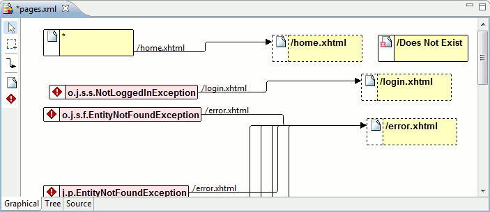
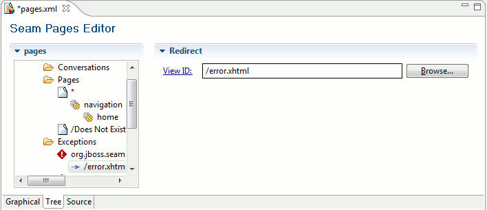

|
An editor for pages.xml have been added for visualizing and edit the flow defined in pages.xml (single page.xml will be added later)
There are three modes: Graphical, Tree and plain source.
Graphical

Yellow, full line: Represent a <page> element.
Yellow, dashed line: Represent a page that is being navigated to but does not exist in pages.xml
Red box: <exception> element
Red cross on page icon: the view-id is not found in the project.
Edit tips: Double click on a page with a concrete view-id will open up that page, selecting and single clicking on the page name allows for quick rename. The context menu also has operations that is worth trying out.
Tree

|